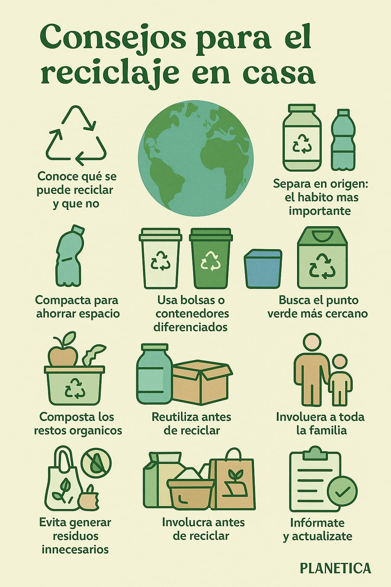

Cómo reducir los residuos en el hogar
Separar los residuos en casa puede parecer un esfuerzo mínimo, pero tiene un gran impacto en la salud del planeta. Reciclar no solo reduce la cantidad de basura que termina en rellenos sanitarios, sino que también ahorra energía y recursos naturales. En este artículo te damos consejos concretos para que empieces (o mejores) tu sistema de reciclaje doméstico, de manera simple y efectiva.

Introducción
Reducir los residuos en casa es una de las acciones más sencillas para disminuir el impacto ambiental. Con pequeños cambios diarios es posible generar menos basura y aprovechar mejor los recursos.
"Cada pequeño cambio suma para construir un planeta más limpio."
1. Separa correctamente los residuos
Clasifica papel, cartón, plástico, vidrio y residuos orgánicos utilizando recipientes diferentes. Esto facilita el reciclaje y reduce la contaminación.
2. Evita productos de un solo uso
Utiliza bolsas reutilizables, botellas recargables y recipientes duraderos para disminuir el consumo de plásticos desechables.